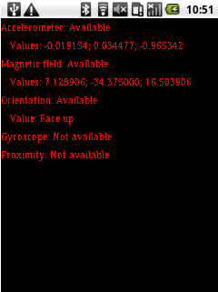

SensorTest is a simple application that demonstrates how to use the functions of the MoSync Sensor C API to control a device's sensors, and to receive current measurements.

This example is included in the MoSync SDK installation in the /examples folder. For information on importing the examples into your workspace, see Importing the Examples.
This example application implements all of the sensor types supported by the MoSync Sensor API. When it is run on a device, it checks for the presence of each type of sensor and shows you the current event data being received from those that it finds.
The project is divided into 2 files:
Use the Back button to close the application.